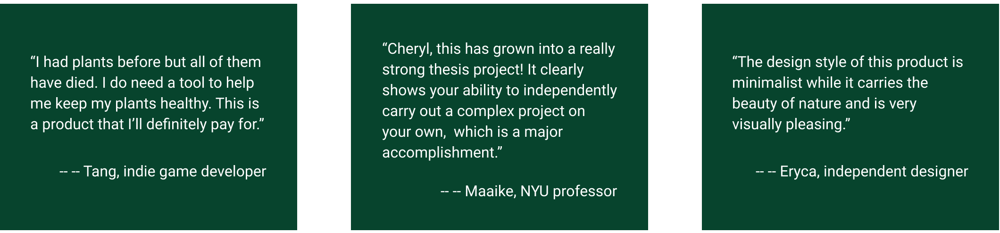

How might we create an engaging and motivational plant care experience?
Greenie is a mobile app designed to help novice and intermediate plant owners build sustainable plant care routines. This project was not only my capstone thesis project at NYU’s Learning Technology and Experience Design, but also a full-cycle solo UX initiative— from user research to testing — carried out over 9 months.
09/2024 – 05/2025 (9 months)
UX researcher & designer
As a plant owner, I care about plants’ health and would like to promote a green lifestyle. Talking to people, I realize there’re multiple challenges people face when tending plants. So I did some research. Desk research shows that houseplant ownership is on the rise, but many novice and intermediate plant owners struggle to keep their plants alive. Through my surveys (n=45) and interviews (n=4), I identified three core problems:
How might we create an engaging and motivational plant care experience?
Based on the survey, The target audience of this design project are novice and intermediate plant owners. They prefer visually engaging content, and are often short on time or unsure how to diagnose plant problems.
I organized the the survey data and the interview insights into an affinity map. From it we know that plant owners expect a platform that:
I also mapped out a typical user journey to understand where pain points and opportunities lie across the plant care experience.
Meet Amber, a novice plant owner. This journey illustrates her emotional and cognitive states from discovering a plant to building a consistent care routine.
There are multiple general ways to record plant growth and manage plants. They include a combination of memory and visual cues, manual records, and digital tools. For the digital tools of plant care, there are some solutions in the market. The three most used ones are: Planta, Blossom, PlantNet.
After comparing the three major plant care apps—Planta, Blossom, and Plantum—several gaps in their features and user experience stand out.
This 9-month project allowed me to demonstrate full-cycle UX design skills from user research to testing. And it strengthened my ability to work independently and iteratively in solving real user problems.
While some features like avatar-based interaction weren’t fully implemented, the final design addresses core user needs and demonstrates my skills in full-cycle UX design. Also, plant care extends beyond the elements shown in the prototype. Looking ahead, I’m excited to further explore the intersection of technology and human-nature interaction.
COMMENTS
